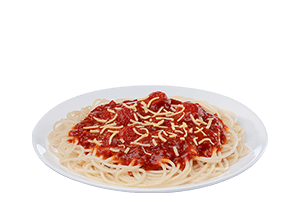

Jolly Spaghetti

Description
Jollibee’s sweet style spaghetti sauce-now the tastiest and meatiest ever from Jollibee! With the chunkiest slices of savory ham and sausages, loaded with ground beef, served over premium quality noodles and topped with lots of cheese. Jollibee Spaghetti – the Spaghettiest!
The legendary Jolly Spaghetti is a medley of spaghetti noodles, ground meat, sliced hot dogs, and a somewhat sweet sauce made from banana ketchup. It’s not nearly as sweet as I thought it would be, and it’s hearty and filling. I understand why this is a staple party food in the Philippines. It’s delicious, and the naysayers who disagree with banana ketchup don’t know what they’re talking about.
Ingredients:
- 2 lbs Spaghetti pasta
- 3 15 oz. can tomato sauce
- 1/2 cup tomato paste
- 1 lb. minced ham
- 1 1/2 lbs ground pork
- 6 to 8 pieces red hotdogs sliced diagonally
- 1/2 cup granulated white sugar
- 1 medium yellow onion minced
- 2 teaspoons minced garlic
- 2 cups beef broth
- 1 cup shredded Velveeta cheese
- 2 tablespoons cooking oil
- Salt and pepper to taste
Steps:
- Cook the spaghetti pasta according to the package instructions. Drain and set aside.
- Heat the oil in a cooking pot.
- Saute the garlic and onion.
- Add the ham. Cook for 3 minutes.
- Put-in the ground pork. Cook for 3 to 5 minutes.
- Pour-in the tomato sauce and beef broth. Stir and let boil. Simmer for 60 minutes.
- Add the hotdogs and tomato paste. Stir and cook for 10 minutes or until the sauce thickens.
- Put-in the sugar, salt, and pepper. Stir until the ingredients are well incorporated.
- Arrange the spaghetti pasta in an individual plate. Pour the meat sauce over the pasta and top with cheese.
- Serve. Share and enjoy!
Back to home